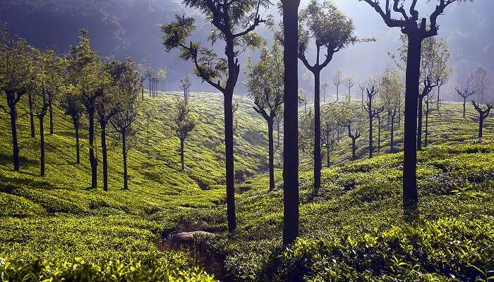
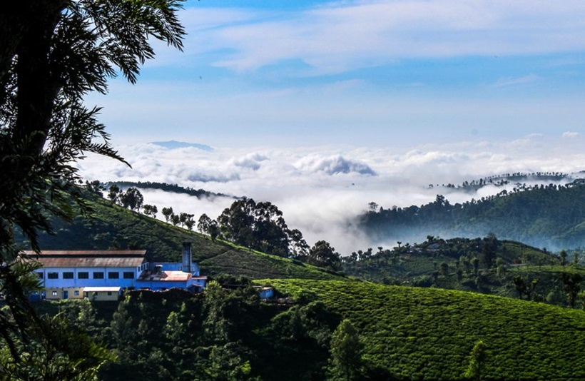
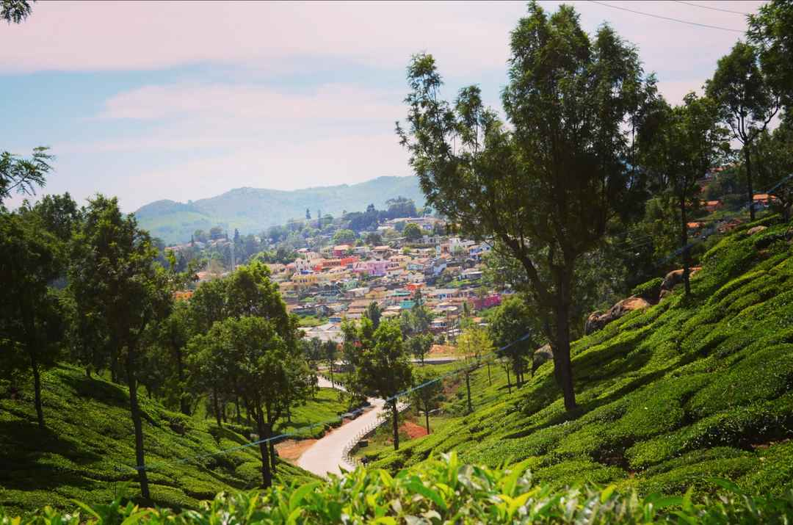

What to do in Coonoor?
There are many things to do in Coonoor including walking/bike tours, cultural and theme tours and stunning sights to see. One of Coonoor's most popular views is the view at Dolphin's Nose. If you would like to discover more to do while visiting Coonoor, click the image to the left.
Where is Coonoor?
Coonoor is a hill station town located within Tanil Nadu. Tanil Nadu is a southern Indian state. If you would like to see a more detailed map of Coonoor, click the image to the right.
How to get to Coonoor?
The nearest airport to Coonoor is Coimbatore International Airport. Once arriving at the airport, buses and cabs are available to Coonoor via National Highway 67. If you want to learn more about your options of travel, click the image to the left.




Want to see more images of Coonoor? Click the image to the right!